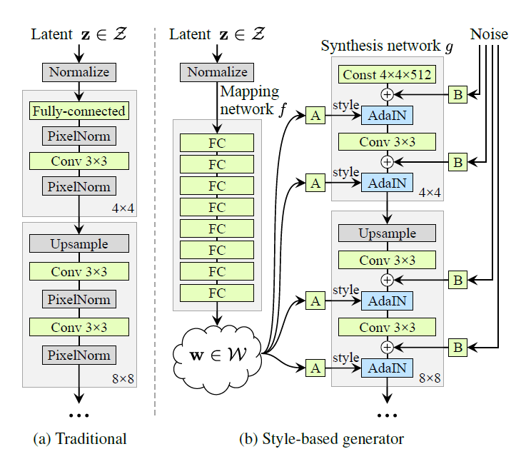

StyleGAN
A Style-Based Generator Architecture for Generative Adversarial Networks Paper | Code
Overview
StyleGAN 的图像生成从一个学习得到的常量开始，在每一层卷积层基于 latent code 调整图像的style，通过无监督的学习，这个网络结构能将 high-level 属性（比如 pose 和身份）和随机的变化（比如皱纹和头发）分离。

StyleGAN 的网络结构包含两个部分，第一个是Mapping network，由隐藏变量 $z$ 生成中间隐藏变量 $w$ ，$w$ 就是用来控制生成图像的style。第二个是Synthesis network，它的作用是生成图像，创新之处在于给每一层子网络都进行 A 和 B 操作：A 对 $w$ 进行仿射变换，B 对输入的噪声进行逐通道的scaling。A 和 B 都是可学习的算子。整个网络结构还是保持了 PG-GAN （progressive growing GAN）的结构。最后论文还提供了一个高清人脸数据集FFHQ。
Mapping network
Mapping network要做的事就是对 latent space 进行解耦。Mapping network由8个全连接层组成，通过一系列仿射变换，由 z 得到 w，这个 w 通过仿射变换转换成styles $y=(y_s, y_b)$，用来控制 AdaIN (adaptive instance normalization) 算子，加到每一层卷积层后，用来控制图像生成。AdaIN 算子定义如下：
每个feature map $x_i$都是分别归一化的，然后用 $y$ 中的 scale 和 bias 标量进行变换，因此 $y$ 的维度是那一层feature maps数量的两倍。
为什么要把 z 变成 w？ latent space 服从训练数据的概率密度，这不可避免地导致特征耦合。一般 $z$ 是符合均匀分布或者高斯分布的随机向量，但在实际情况中，并不是这样，比如头发的长度和男子气概，下图（a）中就是这两个特征的组合，左上角缺失的部分代表头发越长，男子气概越强，如果直接用均匀分布或者高斯分布对头发长度和男子气概进行采样，得到的结果都不准确，因此在（b）中将分布（a）warp 成连续的分布函数 $f(z)$，这个 $f(z)$ 的密度是非均匀的，图 (c) 是 $w$ 的分布。
Synthesis network
Synthesis network 包含18层，每个分辨率有两层，分辨率通过逐级上采样，从 $4 \times 4$ 增加到 $1024 \times 1024$。最后的输出通过一层 $1 \times 1$ 卷积转换成RGB图像。
latent space interpolations
latent space 中进行插值，能得到图像空间上的非线性变换，比如，两张图片中都没有的特征可能会在插值后的图片中出现，这说明 latent space 是耦合的，导致变化的因素没有被很好地分离。
Stochastic variation
论文中的 Stochastic variation 是为了让生成的人脸的细节部分更随机、更自然，细节部分主要指头发丝、皱纹、皮肤毛孔、胡子茬等。实现这种 Stochastic variation 的方法就是引入噪声，StyleGAN的做法是在每一次卷积操作后都加入高斯噪声。
Perceptual path length
图像生成其实是学习从一个分布到目标分布的迁移过程。Perceptual path length 是一个指标，用于判断生成器是否选择了最近的路线，用训练过程中相邻时间节点上的两个生成图像的距离来表示，公式如下：
其中 $g$ 表示生成器，$d$ 表示判别器，$f$ 表示 Mapping network，$f(z_i), i=1,2$ 表示由 latent code 得到的 intermediate latents $w, w \in W$, $t$ 表示某个时间点，$t+\epsilon$ 表示下一个时间点，lerp 表示线性插值。
Truncation Trick
Truncation Trick 不是StyleGAN提出来的，它很早就在GAN里用于图像生成了。从数据分布来说，低概率密度的数据在网络中的表达能力很弱，直观理解就是，低概率密度的数据出现次数少，能影响网络梯度的机会也少，但并不代表低概率密度的数据不重要。可以提高数据分布的整体密度，把分布稀疏的数据点都聚拢到一起，类似于PCA，做法很简单，首先找到数据中的一个平均点，然后计算其他所有点到这个平均点的距离，对每个距离按照统一标准进行压缩，这样就能将数据点都聚拢了，但是又不会改变点与点之间的距离关系。
设中心点是 $\bar w$，压缩倍数是 $\phi$，截断后的向量 $w’=\bar w + \phi(w-\bar w)$。
StyleGAN2
Analyzing and Improving the Image Quality of StyleGAN Paper | Code
StyleGAN3
Alias-Free Generative Adversarial Networks Paper | Code